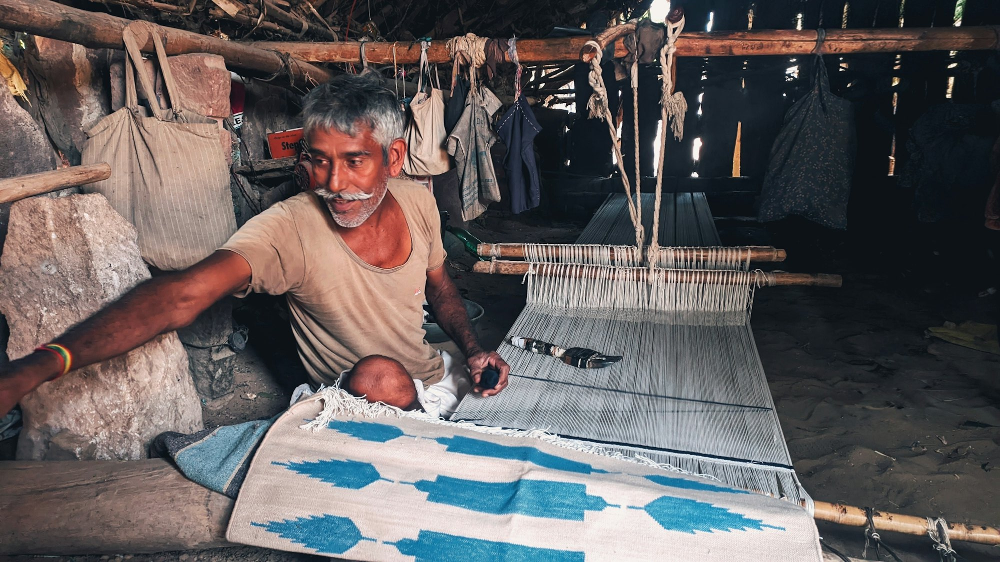

Independent thought.
Learn to observe carefully, understand context and develop an original point of view. A good design decision should be explainable, not accidental.
Dhruv Design School is a new school in development in Baner, Pune, with an ambition to connect design, research and technical skill at an international standard.
We want to build a place where a powerful idea is only the beginning. Where students learn to research it, question it, make it, test it—and make it better.
India has extraordinary traditions of making, a growing design economy and complex questions worth working on. Our vision is to bring those worlds into one sustained educational practice.
The core of the school is college-level professional preparation. Students should leave with more than familiarity with software or materials: they should be able to explain their decisions, demonstrate their craft and respond to a real brief.
Mastery is built over time. Our proposed programmes establish strong foundations, with repeated practice, constructive critique and progressively demanding projects.

Design gives direction.
Research asks why.
Skill makes it possible.
Our ambition is to cultivate all three together, across the boundaries between fashion, objects, spaces and interactive experiences.
Learn to observe carefully, understand context and develop an original point of view. A good design decision should be explainable, not accidental.
Use materials, prototypes and field studies to investigate possibilities. Record failures and learn from the evidence they produce.
Build precision, judgement and confidence through practice. Test what you make against the requirements of people, materials and production.
We look to institutions such as the School of the Art Institute of Chicago for the seriousness of their studio culture and the freedom to work across disciplines. Our task is to build an approach that responds to India’s materials, communities and opportunities.
SAIC is an educational reference, not a partner or affiliate. Dhruv’s programmes are independently proposed.
We are developing the academic framework, facilities and teaching team. The proposed launch begins with Fashion and Product Design, followed by additional pathways as staffing and studio capacity grow.
Faculty names, confirmed partnerships, fees and opening dates will be published when finalised. School-age workshops will be a separate activity, scheduled around the main college programmes.
Understand the admissions plan ↗